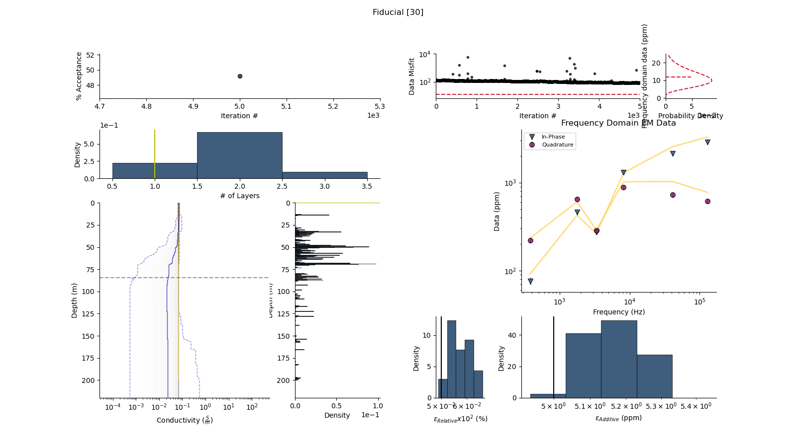

Note
Go to the end to download the full example code
Running GeoBIPy to invert Resolve data
import os
import sys
import pathlib
from datetime import timedelta
import time
import numpy as np
from geobipy import Inference3D
from geobipy import user_parameters
from geobipy import get_prng
def checkCommandArguments():
"""Check the users command line arguments. """
import argparse
# warnings.filterwarnings('error')
Parser = argparse.ArgumentParser(description="GeoBIPy",
formatter_class=argparse.ArgumentDefaultsHelpFormatter)
Parser.add_argument('--index', default=0, type=int, help='job array index 0-18')
Parser.add_argument('--data', default=None, help="Data type. Choose from ['skytem_512', 'tempest', 'resolve']")
Parser.add_argument('--model', default=None, help="Model type. Choose from ['glacial', 'saline_clay', 'resistive_dolomites', 'resistive_basement', 'coastal_salt_water', 'ice_over_salt_water']")
return Parser.parse_args()
np.random.seed(0)
args = checkCommandArguments()
sys.path.append(os.getcwd())
models = ['glacial', 'saline_clay', 'resistive_dolomites', 'resistive_basement', 'coastal_salt_water', 'ice_over_salt_water']
data_type = "Resolve"
model_type = models[args.index]
The directory where HDF files will be stored %%
file_path = os.path.join(data_type, model_type)
pathlib.Path(file_path).mkdir(parents=True, exist_ok=True)
for filename in os.listdir(file_path):
try:
if os.path.isfile(file_path) or os.path.islink(file_path):
os.unlink(file_path)
except Exception as e:
print('Failed to delete %s. Reason: %s' % (file_path, e))
output_directory = file_path
data_filename = data_type + '_' + model_type
parameter_file = "../../supplementary/options_files/{}_options".format(data_type)
inputFile = pathlib.Path(parameter_file)
assert inputFile.exists(), Exception("Cannot find input file {}".format(inputFile))
output_directory = pathlib.Path(output_directory)
assert output_directory.exists(), Exception("Make sure the output directory exists {}".format(output_directory))
print('Using user input file {}'.format(parameter_file))
print('Output files will be produced at {}'.format(output_directory))
kwargs = user_parameters.read(inputFile)
kwargs['n_markov_chains'] = 5000
kwargs['data_filename'] = kwargs['data_filename'] + '//' + data_filename + '.csv'
# Everyone needs the system classes read in early.
data = kwargs['data_type']._initialize_sequential_reading(kwargs['data_filename'], kwargs['system_filename'])
# Start keeping track of time.
t0 = time.time()
seed = 146100583096709124601953385843316024947
prng = get_prng(seed=seed)
inference3d = Inference3D(data, prng=prng)
inference3d.create_hdf5(directory=output_directory, **kwargs)
print("Created hdf5 files in {} h:m:s".format(str(timedelta(seconds=time.time()-t0))))
inference3d.infer(index=2, **kwargs)
- 
![Fiducial [2], Frequency Domain EM Data](../../_images/sphx_glr_plot_inference_1d_resolve_002.png)
Using user input file ../../supplementary/options_files/Resolve_options
Output files will be produced at Resolve/glacial
Creating HDF5 files, this may take a few minutes...
Files are being created for data files ..//..//supplementary//data//Resolve_glacial.csv and system files ..//..//supplementary//data//FdemSystem2.stm
Created hdf5 file for line 0.0 with 79 data points
Created hdf5 files 79 total data points
Created hdf5 files in 0:00:00.097752 h:m:s
i=5000, k=2, acc=*34.600, 0.007 s/Model, 35.645 s Elapsed
Remaining Points -2/1 || Elapsed Time: 0:00:36.760574 h:m:s || ETA 0:00:12.253525 h:m:s
Total running time of the script: (0 minutes 37.269 seconds)